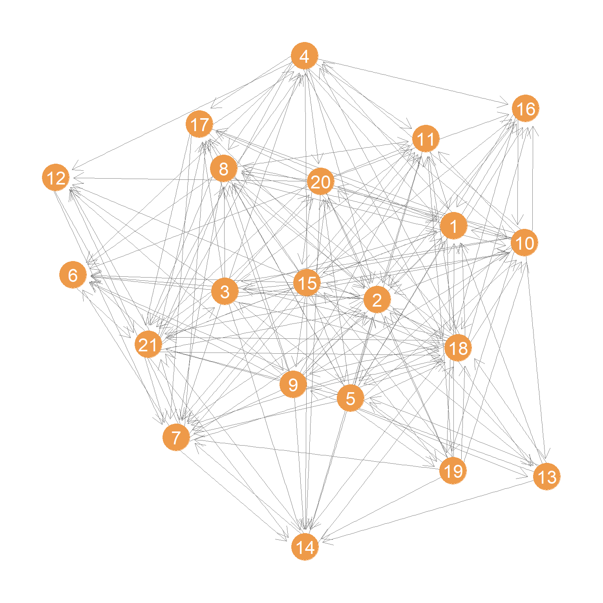

PageRank Prestige Scoring
The model of status distribution implied by the Eigenvector Centrality approach implies that each actor distributes the same amount of status independently of the number of connections they have. Status just replicates indefinitely. Thus, a node with a 100 friends has 100 status units to distribute to each of them and a node with a 10 friends has 10 units.
This is why the eigenvector idea rewards nodes who are connected to popular others more. Even though everyone begins with a single unit of status, well-connected nodes by degree end up having more of it to distribute.
1 A Degree-Normalized Model of Status
But what if status propagated in the network proportionately to the number of connections one had? For instance, if someone has 100 friends and they only had so much time or energy, they would only have a fraction of status to distribute to others than a person with 10 friends.
In that case, the node with a hundred friends would only have 1/100 of status units to distribute to each of their connections while the node with 10 friends would have 1/10 units. Under this formulation, being connected to discerning others, that is people who only connect to a few, is better than being connected to others who connect to everyone else indiscriminately.
How would we implement this model? First, let’s create a variation of the undirected friendship nomination adjacency matrix called the \(\mathbf{P}\) matrix. It is defined like this:
\[ \mathbf{P} = \mathbf{D}_{out}^{-1}\mathbf{A} \]
Where \(\mathbf{A}\) is our old friend the adjacency matrix, and \(\mathbf{D}_{out}^{-1}\) is a matrix containing the inverse of each node outdegree along the diagonals and zeroes in every other cell.
In R we can create the \(\mathbf{D}_{out}^{-1}\) matrix using the native diag function like this (using an undirected version of the Krackhardt high-tech managers friendship network):
Recalling that the function rowSums gives us the row sums of the adjacency matrix, which is the same as each node’s outdegree.
We can check out that the \(\mathbf{D}_{out}^{-1}\) indeed contains the quantities we seek by looking at its first few rows and columns:
[,1] [,2] [,3] [,4] [,5] [,6] [,7] [,8] [,9] [,10]
[1,] 0.11 0.0 0.00 0.00 0.0 0.00 0.00 0.0 0.00 0.00
[2,] 0.00 0.1 0.00 0.00 0.0 0.00 0.00 0.0 0.00 0.00
[3,] 0.00 0.0 0.17 0.00 0.0 0.00 0.00 0.0 0.00 0.00
[4,] 0.00 0.0 0.00 0.14 0.0 0.00 0.00 0.0 0.00 0.00
[5,] 0.00 0.0 0.00 0.00 0.1 0.00 0.00 0.0 0.00 0.00
[6,] 0.00 0.0 0.00 0.00 0.0 0.14 0.00 0.0 0.00 0.00
[7,] 0.00 0.0 0.00 0.00 0.0 0.00 0.33 0.0 0.00 0.00
[8,] 0.00 0.0 0.00 0.00 0.0 0.00 0.00 0.2 0.00 0.00
[9,] 0.00 0.0 0.00 0.00 0.0 0.00 0.00 0.0 0.17 0.00
[10,] 0.00 0.0 0.00 0.00 0.0 0.00 0.00 0.0 0.00 0.12We can then create the \(\mathbf{P}\) matrix corresponding to the undirected version of the Krackhardt friendship network using matrix multiplication like this:
Recalling that %*% is the R matrix multiplication operator.
So the resulting \(\mathbf{P}\) is the original adjacency matrix, in which each non-zero entry is equal to one divided by the outdegree of the corresponding node in each row.
Here are the first 10 rows and columns of the new matrix:
[,1] [,2] [,3] [,4] [,5] [,6] [,7] [,8] [,9] [,10]
[1,] 0.00 0.11 0.00 0.11 0.00 0.00 0.00 0.11 0.00 0.00
[2,] 0.10 0.00 0.00 0.10 0.10 0.10 0.00 0.00 0.00 0.00
[3,] 0.00 0.00 0.00 0.00 0.00 0.00 0.00 0.00 0.00 0.17
[4,] 0.14 0.14 0.00 0.00 0.00 0.00 0.00 0.14 0.00 0.00
[5,] 0.00 0.10 0.00 0.00 0.00 0.00 0.00 0.00 0.10 0.10
[6,] 0.00 0.14 0.00 0.00 0.00 0.00 0.14 0.00 0.14 0.00
[7,] 0.00 0.00 0.00 0.00 0.00 0.33 0.00 0.00 0.00 0.00
[8,] 0.20 0.00 0.00 0.20 0.00 0.00 0.00 0.00 0.00 0.20
[9,] 0.00 0.00 0.00 0.00 0.17 0.17 0.00 0.00 0.00 0.17
[10,] 0.00 0.00 0.12 0.00 0.12 0.00 0.00 0.12 0.12 0.00Note that the entries are now numbers between zero and one and the matrix is asymmetric; that is, \(p_{ij}\) is not necessarily equal to \(p_{ji}\). In fact \(p_{ij}\) will only be equal to \(p_{ji}\) when \(k_i = k_j\) (nodes have the same degree). Each cell in the matrix is thus equal to \(1/k_i\) where \(k_i\) is the degree of the node in row \(i\).
Moreover the rows of \(\mathbf{P}\) sum to one:
Which means that the \(\mathbf{P}\) matrix is row stochastic. That is the “outdegree” of each node in the matrix is forced to sum to a fixed number. Substantively this means that we are equalizing the total amount of prestige or status that each node can distribute in the system to a fixed quantity.
This means that nodes with a lot of out-neighbors will dissipate this quantity by distributing it across a larger number of recipients (hence their corresponding non-zero entries in the rows of \(\mathbf{P}\)) will be a small number) and nodes with a few out-neighbors will have more to distribute.
Another thing to note is that while the sums of the \(\mathbf{P}\) matrix sum to a fixed number (1.0) the sums of the columns of the same matrix do not:
[1] 1.11 1.34 0.63 0.86 1.56 1.06 0.37 0.51 0.61 1.21 2.33 0.92 0.17 0.87 1.08
[16] 0.53 2.73 0.54 1.21 0.60 0.77This means that inequalities in the system will be tied to the indegree of each node in the \(\mathbf{P}\) matrix, which is given by either the column sums of the matrix (as we just saw) or the row sums of the transpose of the same matrix \(\mathbf{P}^T\):
[1] 1.11 1.34 0.63 0.86 1.56 1.06 0.37 0.51 0.61 1.21 2.33 0.92 0.17 0.87 1.08
[16] 0.53 2.73 0.54 1.21 0.60 0.77This will come in handy in a second.
The \(\mathbf{P}\) matrix has many interpretations, but here it just quantifies the idea that the amount of centrality each node can distribute is proportional to their degree, and that the larger the degree, the less there is to distribute (the smaller each cell \(p_{ij}\) will be). Meanwhile, it is clear that nodes that are pointed to by many other nodes who themselves don’t point to many others have a larger indegree in \(\mathbf{P}\).
Now we can just adapt the the model of status distribution we used for eigenvector centrality but this time using the \(\mathbf{P}\) rather than the \(\mathbf{A}\) matrix. Note that because we are interested in the status that comes into each node we use the transpose of \(\mathbf{P}\) rather than \(\mathbf{P}\), just like we did for the Bonacich (1972) status score.
Here’s our old status game function:
Code
status1 <- function(w) {
x <- rep(1/nrow(w), nrow(w)) #initial status vector set to one over the number of nodes
d <- 1 #initial delta
while (d > 1e-10) {
o.x <- x #old status scores
x <- w %*% o.x #new scores a function of old scores and adjacency matrix
x <- x/norm(x, type = "E") #normalizing new status scoress
d <- abs(sum(abs(x) - abs(o.x))) #delta between new and old scores
} #end while loop
return(as.vector(x))
}At each step, the status of a node is equivalent to the sum of the status scores of their in-neighbors, with more discerning in-neighbors passing along more status than less discerning ones:
[1] 0.500 0.556 0.333 0.389 0.556 0.389 0.167 0.278 0.333 0.444 0.778 0.444
[13] 0.111 0.333 0.500 0.278 1.000 0.222 0.556 0.278 0.333What if I told you that these numbers are the same as the leading eigenvector of \(\mathbf{P}^T\)?
[1] 0.500 0.556 0.333 0.389 0.556 0.389 0.167 0.278 0.333 0.444 0.778 0.444
[13] 0.111 0.333 0.500 0.278 1.000 0.222 0.556 0.278 0.333And, of course, the (normalized) scores produced by this approach are identical to those computed by the page_rank function in igraph with “damping factor” (to be explained in a second ) set to 1.0:
[1] 0.500 0.556 0.333 0.389 0.556 0.389 0.167 0.278 0.333 0.444 0.778 0.444
[13] 0.111 0.333 0.500 0.278 1.000 0.222 0.556 0.278 0.333So the distributional model of status is the same one implemented in the PageRank algorithm!
2 PageRank as a Markov Difussion Model
Remember how we just said that there are multiple ways of thinking about \(\mathbf{P}\)? Another way of thinking about the \(\mathbf{P}\) matrix is as characterizing the behavior of a random walker in the graph. At any time point \(t\) the walker (a piece of information, a virus, or status itself) sits on node \(i\) and the with probability \(p_{ij}\) jumps to \(j\), who is one of node \(i\)’s out-neighbors. The probabilities for each \(i\) and \(j\) combination are stored in the matrix \(\mathbf{P}\).
So our status game can best be understood as a special case of a diffusion game, where what’s being diffused through the network is status itself. Let’s see how this would work.
Imagine we want to spread something through the Krackhardt managers friendship network like a rumor or a piece of information. We start with a seed node \(i\) and then track “where” the rumor is at each time step in the network (where the location is a person in the network). The rules of the game are the Markov diffusion model we described above. At each time step the rumor sits on some \(j\) and it diffuses to one of \(j\)’s neighbors \(k\) with probability \(p_{jk}\). Where the rumor has been before that time step does not affect where it goes in the present.
This sequence of transmission events is called a markov chain, and when it happens in a graph it is called a random walk on the graph. The node at which the rumor sits at a given time \(t\) is called the state of the markov chain at \(t\). For instance, the following function prints out every state of the markov chain for some series of steps \(q\), given a network transition matrix \(\mathbf{P}\) (the w argument in the function):
The function above sets the “seed” node to that given in the argument seed (by default, node 1) in line 2. Then, in line 4, it enters the for loop to run q times (in this case 100 times). In line 6 the state vector at t is set to a random node \(j\) sampled from the \(\mathbf{P}\) matrix with probability equal to the entry \(p_{ij}\) in the \(i^{th}\) row of the matrix.
For instance when it comes to first node that row looks like:
[1] 0.00 0.11 0.00 0.11 0.00 0.00 0.00 0.11 0.00 0.00 0.11 0.11 0.00 0.00 0.11
[16] 0.11 0.11 0.00 0.11 0.00 0.00Which means that nodes {2, 4, 8, 11, 12, 15, 16, 17, 19} (the neighbors of node 1) have an 11% chance each of being sampled in line 6 and the other ones have no chance. Then in line 7 the new source node is set to whatever neighbor of \(i\) was sampled in line 6.
Here’s a markov chain state sequence of length 100 from the managers friendship network, starting with node 1 as the seed:
[1] 17 15 5 15 17 2 5 19 1 2 4 2 4 12 11 3 14 19 2 1 15 1 19 14 19
[26] 3 14 15 19 5 2 1 2 5 21 5 2 5 19 2 4 17 10 9 17 9 15 14 3 10
[51] 20 10 17 20 19 20 17 4 12 21 18 21 2 11 13 5 17 6 17 16 10 17 14 15 17
[76] 19 3 17 6 15 9 10 17 8 17 8 10 9 11 5 17 4 17 2 6 12 11 4 8 1We can of course create a longer one by changing the q argument while setting the seed node to 5:
[1] 10 3 11 5 19 2 21 6 2 4 8 1 4 17 9 5 9 5 17 6 17 8 10 12 11
[26] 3 10 12 1 16 4 16 10 16 17 19 5 11 15 1 2 11 5 2 19 11 4 2 1 19
[51] 12 4 11 15 5 17 11 3 17 7 6 2 5 14 19 15 19 3 15 6 21 12 19 11 18
[76] 11 19 11 1 11 15 17 1 19 1 16 17 19 3 11 8 17 7 6 9 5 15 14 5 19
[101] 3 11 8 11 20 18 11 3 10 3 15 1 19 11 8 11 9 10 17 20 11 5 2 17 21
[126] 18 2 19 15 11 4 8 4 8 4 11 13 11 12 1 12 6 15 6 9 17 8 17 10 9
[151] 11 15 3 14 7 14 3 15 5 17 14 17 8 4 1 4 16 4 1 11 5 2 18 20 11
[176] 20 18 20 19 20 18 20 10 8 11 9 17 19 17 6 12 10 3 10 3 19 5 11 5 2
[201] 1 4 16 1 8 1 11 1 17 19 1 19 2 21 18 21 2 16 17 8 11 13 11 8 4
[226] 16 17 15 5 19 11 20 10 17 8 4 2 11 5 19 20 11 13 5 13 5 11 1 2 4
[251] 11 1 4 12 19 20 19 1 17 9 5 2 6 17 10 5 21 2 17 14 5 21 12 19 3
[276] 19 17 6 21 18 21 2 16 1 12 10 12 19 17 20 18 21 18 2 19 3 17 16 4 8
[301] 4 16 2 19 17 19 2 19 5 11 4 17 20 19 15 14 3 10 8 4 1 17 16 2 19
[326] 15 9 5 15 14 15 5 9 5 17 9 11 9 15 6 17 10 5 2 6 15 19 20 11 19
[351] 3 11 18 20 10 9 10 16 4 1 16 4 1 16 10 17 2 16 2 17 4 8 11 8 4
[376] 12 19 1 12 4 8 4 11 8 17 5 19 3 10 17 11 17 21 6 7 6 12 1 2 18
[401] 2 19 15 3 14 19 5 11 13 5 10 3 17 1 2 16 10 20 11 17 3 10 12 1 4
[426] 1 16 2 1 2 11 2 18 11 5 19 15 19 17 15 11 19 3 17 4 11 3 15 1 17
[451] 21 6 21 6 2 1 17 19 5 13 11 17 1 17 6 15 3 17 6 17 21 17 15 19 15
[476] 19 12 17 12 19 15 14 17 14 17 9 11 20 17 8 17 20 18 21 18 21 2 17 4 8Note that one thing that happens here is that the rumor goes through some nodes more often than others. Another thing that you may be thinking is that the odds that a node will keep repeating itself in this chain has to do with how many neighbors they have since that increases the chances that they will be chosen in the sample line of the function. If you think that, you will be right!
One thing we can do with the long vector of numbers above is compute the probability that the chain will be in some state or another after a number of steps \(q\). To do that, all we have to do is find out the number of times each of the numbers (from one through twenty one) repeats itself, and then divide by the total number of steps.
In R we can do that like this, using q = 50000:
Code
1 2 3 4 5 6 7 8 9 10 11 12 13 14 15 16
0.06 0.06 0.04 0.04 0.06 0.04 0.02 0.03 0.04 0.05 0.09 0.05 0.01 0.04 0.06 0.03
17 18 19 20 21
0.12 0.03 0.06 0.03 0.04 Line 1 computes the states of the markov chain after 50000 iterations using our markov.chain1 function. Then line 2 uses the native R function table as a handy trick to compute how many times each node shows up in the chain stored in the count object:
Code
countstates
1 2 3 4 5 6 7 8 9 10 11 12 13 14 15 16
2803 3115 1971 2162 3202 2130 961 1523 1877 2463 4450 2446 621 1974 2888 1542
17 18 19 20 21
5825 1308 3228 1608 1903 Finally, line 4 divides these numbers by the length of the chain to get the probability.
Note that the numbers stored in the p vector are readily interpretable. For instance, the 0.06 in the first spot tells us that if we were to run this chain many times and check where the rumor is at step fifty-thousand, there is 6% chance that the rumor will be sitting on node 1, while there is a 11% chance that it would be sitting on node 17, a 3% chance that it will be on node 18, and so forth.
Like well behaved probabilities, these numbers sum to 1.0:
We can incorporate these steps in to a new and improved function like thus:
Which now does everything in one step:
1 2 3 4 5 6 7 8 9 10
0.05606 0.06230 0.03942 0.04324 0.06404 0.04260 0.01922 0.03046 0.03754 0.04926
11 12 13 14 15 16 17 18 19 20
0.08900 0.04892 0.01242 0.03948 0.05776 0.03084 0.11650 0.02616 0.06456 0.03216
21
0.03806 There is another way to compute these probabilities more directly from the \(\mathbf{P}\) matrix. The basic idea is that at any time \(t\), the distribution of probabilities across nodes in the network stored in the vector \(\mathbf{x}\) is given by:
\[ \mathbf{x}(t) = \mathbf{P}^T\mathbf{x}(t-1) \]
With the initial probability vector given by:
\[ \mathbf{x}(0) = \mathbf{e}^{(i)} \]
Where \(e^{(i)}\) is a vector containing all zeros except for the \(i^{th}\) spot, where it contains a one, indicating the initial seed node.
Here’s an R function that implements this idea:
And we can see what it spits out:
1 2 3 4 5 6 7 8 9 10 11 12 13 14 15 16
0.06 0.06 0.04 0.04 0.06 0.04 0.02 0.03 0.04 0.05 0.09 0.05 0.01 0.04 0.06 0.03
17 18 19 20 21
0.11 0.03 0.06 0.03 0.04 Which are the same as our more complicated function above.
Now you may have noticed this already, but these are the same numbers produced by the the PageRank status game!
1 2 3 4 5 6 7 8 9 10 11 12 13 14 15 16
0.06 0.06 0.04 0.04 0.06 0.04 0.02 0.03 0.04 0.05 0.09 0.05 0.01 0.04 0.06 0.03
17 18 19 20 21
0.11 0.03 0.06 0.03 0.04 This gives us another (and perhaps) more intuitive interpretation of what the PageRank prestige ranking is all about. Nodes have more prestige if they are more “central” in a network where something is spreading via a random walk process. Higher ranked nodes will be visited more often by the random walker, less-highly-ranked nodes less.
Note that if a random walker is just a web surfer then it makes sense that a more highly visited page should be more prestigious (and show up toward the top in your Google search) than a less frequently visited page (Brin and Page 1998).
3 PageRank with Damping and Teleportation in Directed Graphs
PageRank of course was designed to deal with directed graphs (like the World Wide Web). So let’s load up the version of the Krackhardt’s Managers data that contains the advice network which is an unambiguously directed relation.
A plot of the advice network is shown in .

We then compute the \(\mathbf{P}\) matrix corresponding to this network:
One issue that arises in computing the \(\mathbf{P}\) for directed graphs is that there could be nodes with no out-neighbors (so-called sink nodes) or like node 6 in , who has just one out-neighbor (e.g., seeks advice from just one person), in which case the probability is 1.0 that if the random walker is at node 6 it will go to node 21.
To avoid this issue the original designers of the PageRank algorithm (Brin and Page 1998) added a “fudge” factor: That is, with probability \(\alpha\) the random walker should hop from node to node following the directed links in the graph. But once in a while with probability \(1-\alpha\) the walker should decide to “teleport” (with uniform probability) to any node in the graph whether it is an out-neighbor of the current node or not.
How do we do that? Well we need to “fix” the \(\mathbf{P}\) matrix to allow for such behavior. So instead of \(\mathbf{P}\) we estimate our distributive status model on the matrix \(\mathbf{G}\) (yes, for Google):
\[ \mathbf{G} = \alpha \mathbf{P} + (1 - \alpha) \mathbf{E} \]
Where \(\mathbf{E}\) is a matrix of the same dimensions as \(\mathbf{P}\) but containing \(1/n\) in every cell indicating that every node has an equal chance of being “teleported” to.
So, fixing \(\alpha = 0.85\) (the standard value chosen by Brin and Page (1998) in their original paper) our \(\mathbf{G}\) matrix would be:
And then we just play our status distribution game on the transpose of \(\mathbf{G}\):
[1] 0.302 0.573 0.165 0.282 0.100 0.437 0.635 0.255 0.092 0.180 0.237 0.242
[13] 0.087 0.268 0.097 0.168 0.258 0.440 0.087 0.200 1.000Which is the same answer you would get from the igraph function page_rank by setting the “damping” parameter to 0.85:
[1] 0.302 0.573 0.165 0.281 0.100 0.437 0.635 0.256 0.091 0.180 0.237 0.242
[13] 0.086 0.269 0.097 0.169 0.258 0.440 0.086 0.200 1.000We can see therefore that the damping parameter simply controls the extent to which the PageRank ranking is driven by the directed connectivity of the \(\mathbf{P}\) matrix, versus a stochastic or random component.